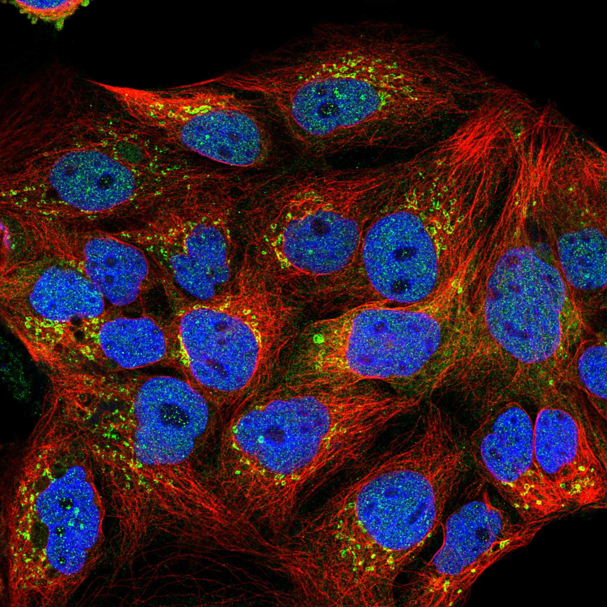
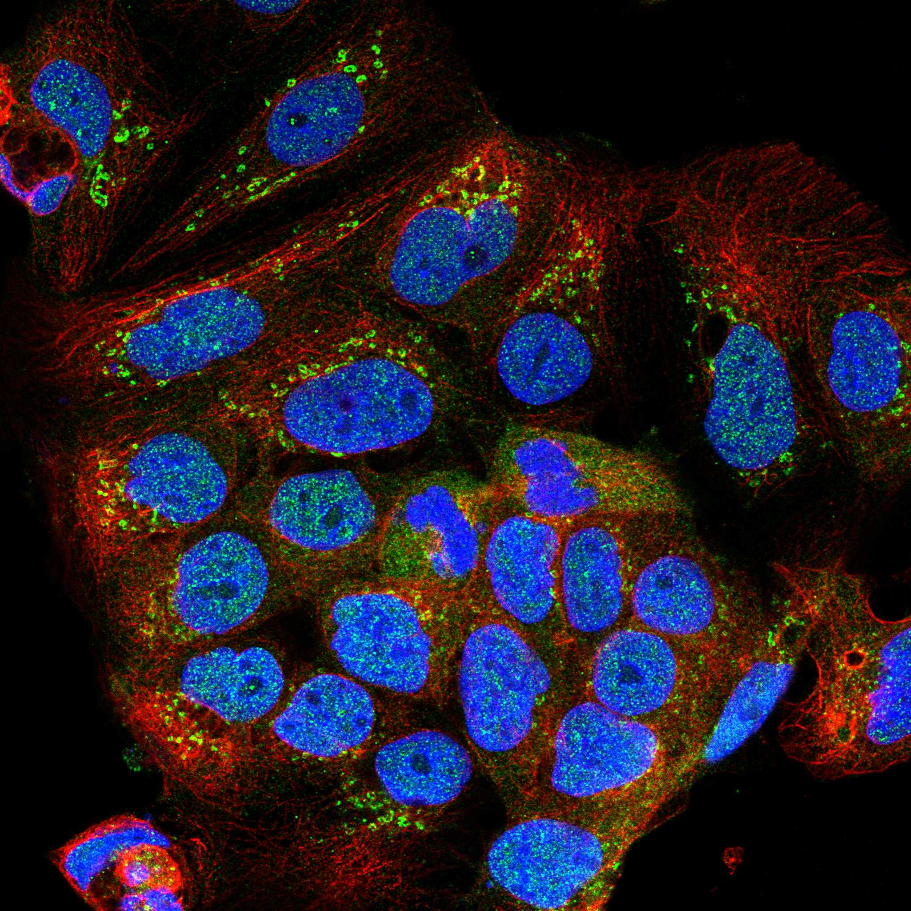
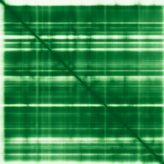

type: protein-evaluation gene: "MAB21L4" date: 2026-06-01 tags: [protein-scout, nucleoplasm, evaluation] status: scored ---
MAB21L4 核蛋白评估报告
1. 基本信息
| 项目 | 内容 |
|---|---|
| 基因名 / 别名 | MAB21L4 / C2orf54 |
| 蛋白全名 | Protein mab-21-like 4 |
| 蛋白大小 | 447 aa / 49.6 kDa |
| UniProt ID | Q08AI8 |
2. 评分总览
| 维度 | 得分 | 权重 | 加权 | 摘要 |
|---|---|---|---|---|
| 核定位特异性 | 6/10 | x4 | 24.0 | HPA Nucleoplasm (Approved); UniProt 无 subcellular location; GO-CC 无数据 |
| 蛋白大小 | 7/10 | x1 | 7.0 | 447 aa, 49.6 kDa |
| 研究新颖性 | 10/10 | x5 | 50.0 | Strict=1 -- 极度新颖 |
| 三维结构 | 7/10 | x3 | 21.0 | AlphaFold pLDDT 84.3; 52.1% >90; 仅 4.5% <50 |
| 调控结构域 | 5/10 | x2 | 10.0 | Mab-21 family domain; developmental regulator |
| PPI 网络 | 3/10 | x3 | 9.0 | STRING 稀疏 (IGFL4 0.478); IntAct 有限 hits |
| 加权总分 | 121/180** | |||
| 互证加分 | +1.0 | HPA Nucleoplasm (Approved) -- 唯一核定位来源 | ||
| 归一化总分 (÷1.83) | 66.1/100** |
PubMed strict: 1
3. 核定位证据
| 来源 | 定位 | 可信度 |
|---|---|---|
| UniProt | 无 subcellular location 注释 | -- |
| GO-CC | 无数据 | -- |
| HPA (IF) | Nucleoplasm (main), Golgi apparatus (main); Reliability: Approved | IF available |
HPA IF 状态: IF available -- HPA Approved。主定位 Nucleoplasm + Golgi apparatus。这是 MAB21L4 核定位的唯一实验证据来源。UniProt 未提供亚细胞定位注释，GO-CC 完全空白。Approved 级别的 HPA 可靠性为最佳可用证据。
已有 IF 图像:



PAE 状态: 已获取 PAE 图像。AlphaFold pLDDT 84.3 (mean), 52.1% >90, 仅 4.5% <50。结构质量良好，mab-21 折叠域预测可信度高。
4. PPI 网络
| Partner | Source | Score/Evidence |
|---|---|---|
| IGFL4 | STRING | 0.478 (textmining only) |
| CROCC2 | STRING | 0.447 (textmining only) |
| RTP5 | STRING | 0.418 (textmining only) |
| XKRX | STRING | 0.400 (textmining only) |
核心发现: STRING 网络极为稀疏，所有连接均为 textmining 来源，无实验验证互作。最高 score 仅 0.478，显示 MAB21L4 的 PPI 数据近乎空白。
IntAct: 8 条记录（大部分为大规模 co-IP/two-hybrid screens 中的非特异性 hits）：NIPSNAP3A, CCR1, SSUH2, PIGT, CDK15, SRRT, PHF11 (PMID:33961781, BioPlex 3.0), Rad23b (pull down)。
UniProt: 无 interaction 记录。
评价: PPI 数据极不完整，缺乏置信互作。这是蛋白功能未阐明蛋白的典型特征。
5. 结构域与染色质调控潜力
| 来源 | 结构域 |
|---|---|
| InterPro | IPR024810 (Mab-21), IPR046906 (Mab-21-like) |
| Pfam | PF20266 (Mab-21 C-term) |
MAB21 家族是进化保守的发育调控因子。C. elegans mab-21 参与细胞命运决定和感觉器官发育，人类 MAB21L1/MAB21L2 与眼球发育异常相关。MAB21L4 是家族中表征最少的成员。
已知功能: (1) 调控 TGF-beta 诱导的靶基因表达（表皮角化细胞, PMID:34908107）；(2) 缺失驱动鳞状细胞癌通过 RET 激活 (PMID:35705526)。TGF-beta 信号和 RET 受体酪氨酸激酶通路的交叉提示 MAB21L4 可能参与核内转录调控，但具体分子机制尚未阐明。
染色质调控潜力: Mab-21 结构域功能未知，无已知 DNA/chromatin 结合基序。但 TGF-beta 靶基因调控功能暗示可能的转录辅因子角色。
6. 总体评价
MAB21L4 是本研究中最具新颖性的蛋白 (PubMed strict = 1)。HPA Approved 级别确认 Nucleoplasm + Golgi 定位，但 UniProt 和 GO-CC 完全空白。PPI 网络近乎不存在。结构质量良好 (pLDDT 84.3)。核心劣势为功能机制完全未知（仅有 2 篇功能文献），实验验证难度大。核心优势为极高新颖性 -- 几乎未被研究。适合作为高风险的 pioneer 靶点。
推荐等级: 3/5 (高风险/高新颖性)
HPA IF 图像已本地嵌入。
PAE 图像暂无数据（未生成本地图片或未可靠获取），结构判断基于AlphaFold pLDDT统计。